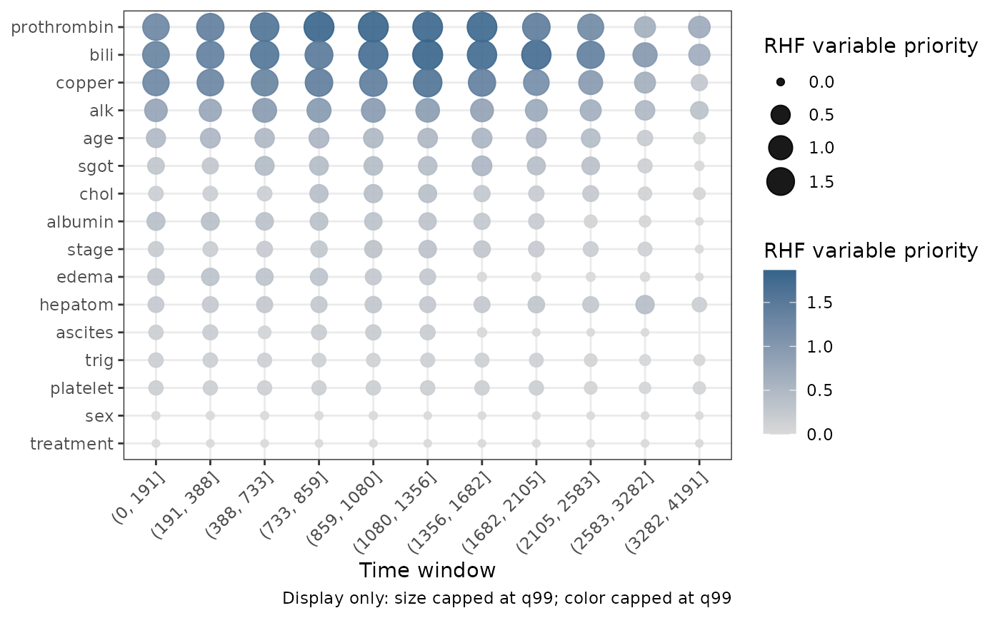

Tidy time-localized variable priority from a Random Hazard Forest
Source:R/gg_rhf_importance.R
gg_rhf_importance.RdExtracts the variable-priority matrix from
randomForestRHF::importance.rhf() into a tidy data frame, one row per
variable and time window. The score measures how much the fitted integrated
hazard changes when rules involving a variable are released.
Usage
gg_rhf_importance(object, ...)
# S3 method for class 'rhf'
gg_rhf_importance(
object,
importance_fit = NULL,
cache = NULL,
time.index = NULL,
...
)Arguments
- object
A fitted
rhfobject from randomForestRHF.- ...
Additional arguments passed to
randomForestRHF::importance.rhf()whenimportance_fitisNULL.- importance_fit
Optional precomputed
randomForestRHF::importance.rhf()result for the sameobject. Supply this object when you have already calculated variable priority.NULL(default) calculates it fromobject.- cache
Optional precomputed
randomForestRHF::varpro.cache.rhf()result used whenimportance_fitisNULL.- time.index
Optional time-grid indices passed to
randomForestRHF::importance.rhf()whenimportance_fitisNULL.
Value
A data.frame of class
c("gg_rhf_importance", "data.frame") with columns:
- variable
Variable name, ordered by
q90priority for plotting.- time_window
Upstream time-window label.
- time
Evaluation time at the end of the window.
- time_index
Index of
timeon the RHF time grid.- start, stop, midpoint
Window boundaries and midpoint.
- n_risk
Number of observations at risk.
- n_rules
Number of rules contributing to the window.
- priority
RHF variable-priority score.
A provenance attribute records the source forest, upstream settings,
whether importance_fit was supplied, and the installed
randomForestRHF version.
Details
Variable priority is time-localized. A large value means that releasing rules involving that variable changed the log integrated hazard more in that window. It is a ranking score, not a z-score, and this function does not apply a significance cutoff.
Calculating the upstream result can be expensive. For an analysis you will
revisit, calculate importance_fit once and supply it here. The extractor
accepts cache, time.index, and additional calculation arguments only
when importance_fit is NULL.
Variables are ordered for plotting by their 90th percentile (q90)
priority across windows. This changes the factor levels, but does not change
the upstream row order or priority values.
References
Ishwaran H, Hsich EM, Kogalur UB, Lee DKK (2026). Random Hazard Forests. arXiv:2608.21597. doi:10.48550/arXiv.2608.21597 .
Ishwaran H, Kogalur UB (2026). randomForestRHF: Random Hazard Forests. R package version 2.0.0. https://CRAN.R-project.org/package=randomForestRHF.
Examples
# \donttest{
if (requireNamespace("randomForestRHF", quietly = TRUE)) {
data(pbc, package = "randomForestSRC")
d <- randomForestRHF::convert.counting(
survival::Surv(days, status) ~ ., na.omit(pbc))
o <- randomForestRHF::rhf(
"Surv(id, start, stop, event) ~ .", d, ntree = 30)
priority_fit <- randomForestRHF::importance.rhf(o)
priority <- gg_rhf_importance(o, importance_fit = priority_fit)
plot(priority)
}

# }